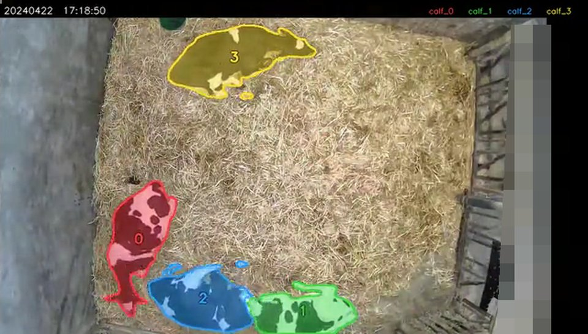
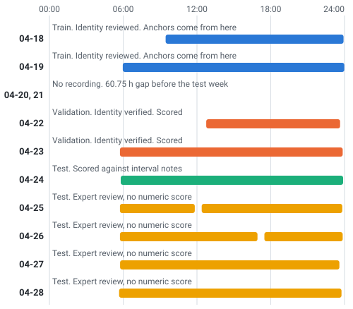
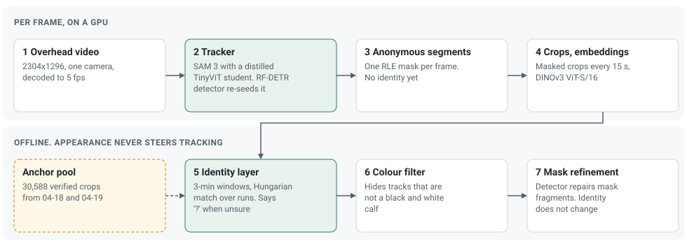

Paper in preparation
Which calf is which, across a week
Records for each animal need every animal to keep its name from one day to the next. We track four dairy calves with one overhead camera for seven days, and give each calf its identity back every morning after the camera has been off all night.

The week
A tracker holds an identity only while it can follow an animal from frame to frame. On this farm that chain breaks every night.
- The camera stops every night, from about 23:50 to 05:45. The calves wake up somewhere else, often in dim infrared light.
- The calves look alike. All four are black and white, seen from above.
- Training and test are days apart. The verified examples come from 04-18 and 04-19, and the week starts 60 hours later.
So identity has to be rebuilt from appearance six times, without one wrong morning spoiling the rest of the week.

How it works

Track first, name later
SAM 3 with a distilled backbone from FarmSAM follows the calves and writes anonymous segments, one mask per calf per frame. An RF-DETR detector re-seeds it when a calf is lost. The tracker never decides who a calf is.
Identity in short windows
Masked crops are embedded with DINOv3 ViT-S/16. Every 3 minutes the identity layer compares them with verified crops from the training days and solves one joint assignment for the four calves. When the evidence is thin it writes "?" rather than guess.
Clean masks
Where a mask breaks into fragments, the detector repairs it. A colour check sets aside anything that is clearly not a black and white calf. Neither step changes identity.
Results
Identity
Times are calf-minutes: one calf for one minute. 04-22 and 04-23 were used for validation; 04-24 to 04-28 were held out.
| Day | Labelled time correct | Trusted calf-minutes correct | Left as "?" |
|---|---|---|---|
| 04-24, held-out test | 99.27 % | 93.0 % of 3,825.5 | 5.2 % |
| 04-22, validation | 99.97 % | 98.45 % of 2,557.9 | 0.02 % |
| 04-23, validation | 99.89 % | 98.1 % of 4,127.5 | 0.09 % |
A veterinarian watched 04-25 to 04-28 at 50× speed and found no wrongly assigned identity, apart from one calf that took about 20 minutes after dawn on 04-28 to get its correct label.
Every night
| Night | Result | Checked against |
|---|---|---|
| 04-22 to 04-23 | 4 of 4 calves | Verified identity chain |
| 04-23 to 04-24 | 4 of 4 calves | Expert notes |
| 04-24 to 04-25 | Correct | Expert review |
| 04-25 to 04-26 | Correct | Expert review |
| 04-26 to 04-27 | Correct | Expert review |
| 04-27 to 04-28 | Correct from 06:00 | Expert review |
Mask refinement
| Days | Fragmented masks, slot-hours before | After |
|---|---|---|
| 04-22 | 2.81 | 0.37 |
| 04-23 | 3.87 | 1.52 |
| 04-24 to 04-28 | 24.56 | 3.90 |
On 04-24 to 04-28 every fragment episode of 10 minutes or more was repaired (19 before, 0 after).
A small embedding model is enough
| DINOv3 backbone | Parameters | Per-crop rank-1 | Re-ID in 5-min windows |
|---|---|---|---|
| ViT-S/16 | 22 M | 88.0 % | 98.8 % |
| ViT-B/16 | 86 M | 86.2 % | 98.6 % |
| ViT-L/16 | 303 M | 87.1 % | 98.9 % |
| ViT-7B/16 | 6,716 M | 85.5 % | 98.6 % |
Scope. One pen, four black and white calves, one camera and one week. Identity is decided offline, and tracking runs at about 3.75 fps on an A10 GPU. Only 04-24 has numeric identity ground truth, and no frame has pixel-level mask ground truth. The tables are also in the repository as CSV.
Videos
Videos run at 50× speed, one frame every 2 s of real time, with the clock in each frame.
The week, day by day
One video per day, from the first light after the night. Each colour is one calf. While people are in the pen, the picture is mosaicked, and the feed alley beyond the rail is mosaicked throughout.
Mask refinement
Teacher and student
Masks
Per-frame masks are on Hugging Face, one gzipped JSON file per video clip, at 5 fps.
| Set | Days | What it is |
|---|---|---|
| Generated | 04-22 to 04-28 | Final refined masks, with rules that map tracker slots to calves over the day. |
| Verified | 04-18, 04-19, 04-22, 04-23, 04-24 | Masks whose identity chain people checked. |
Reading a mask
import gzip, json
from pycocotools import mask as mask_utils
with gzip.open("masks_FarmA_R1_ch01-20240425-054428-061038.json.gz", "rt") as f:
clip = json.load(f)
frame = clip["frames"][0] # keys 0-3 are tracker slots, not calves
rle = frame["masks"]["0"] # None if that slot has no mask
h, w = rle["size"]
binary = mask_utils.decode(mask_utils.frPyObjects(rle, h, w)) # h x w, uint8Slots become calves through relabel_week_<day>.json. See the dataset card for the layout, and examples/decode_masks.py for a decoder that needs only NumPy.
The video is camera FarmA_R1 of the Calf Play Behavior Dataset (doi:10.57967/hf/10912), and each mask file carries the name of its clip there.
Licences
| Item | Terms |
|---|---|
| Code | MIT |
| Masks and labels | SAM License, because they come from SAM 3 and a student distilled from it |
| SAM 3 | SAM License, gated |
| Calf student and calf detector | SAM License, at Calf-Identity-Tracking-Weights |
| DINOv3 ViT-S/16 | DINOv3 License |
| RF-DETR (library) | Apache-2.0 |
Citation
The paper is in preparation. Until it is out, please cite this repository and the two works below.
@misc{calf_identity_week,
title = {Which calf is which, across a week},
author = {Yang, Haiyu},
year = {2026},
url = {https://github.com/Sonam525/Re-id-for-tracking}
}- Distillation paper: arXiv:2604.27128. Code at FarmSAM.
- Video dataset: doi:10.57967/hf/10912.